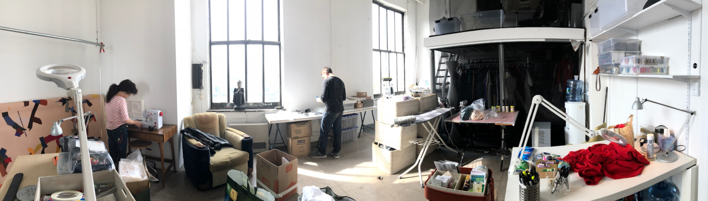
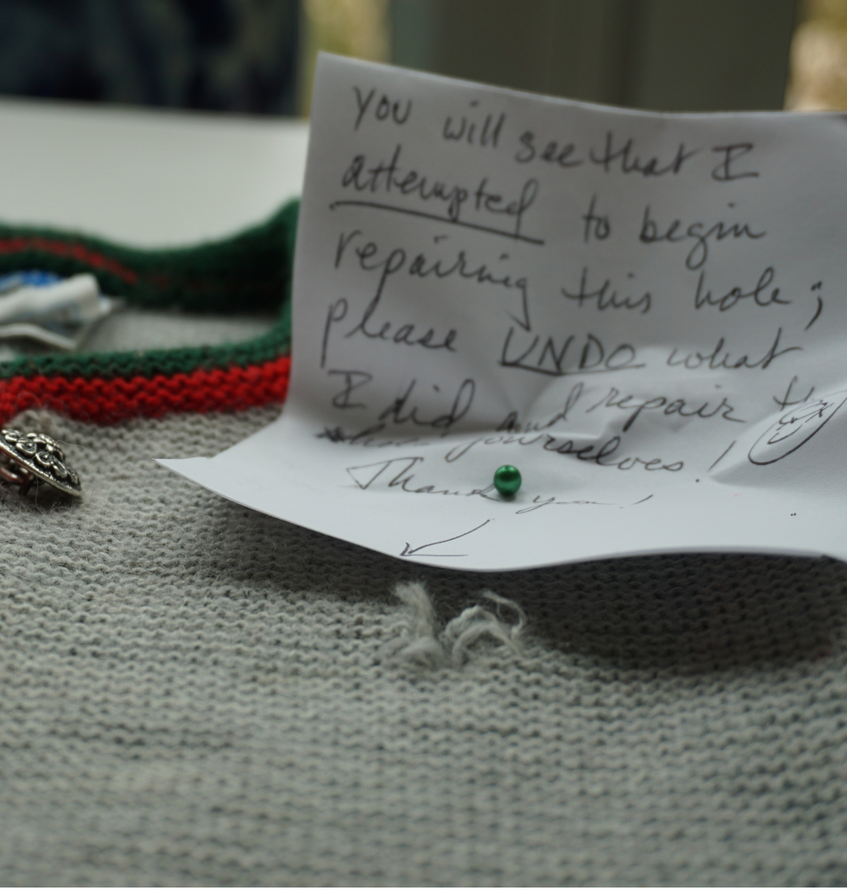

<div class="row no-gutters">
  <div class="col-12 overflow-hidden">
    <section class="section-bg">
      <app-header [theme]="headerThemes.BLACK"></app-header>
      <div class="text-bold f-64 text-gray p-5 text-xl-left text-center">Our Story</div>
    </section>
    <div class="m-0 text-center">
      
    </div>
    <section class="section-bg">
      <div class="row no-gutters">
        <div class="col-xl-6">
          <div class="f-18 content">
            <p>
              We built this company on the promise of providing the best quality repair available. We stand by that
              commitment 100%. We fix clothing that other companies turn away. And if we can't fix it to our standards,
              we tell you. Your happiness and satisfaction are the most important to us and is ultimately our reward.
            </p>
            <p>
              Technology has given businesses like Alterknit the ability to reach and connect with many many more
              customers nationwide 24 hours a day, 7 days a week. Behind the website is a team of skilled human beings,
              working with tiny needles and magnifiers and repairing garments by hand. You might be interested to know
              that over 80% of the garments we repair are on sweaters and suits made overseas on machines. We fix your
              clothes right here in America. Working by hand and harvesting fibers from the garments themselves we leave
              virtually no carbon footprint. Not only do you get to enjoy your favorite clothes again but
              together we have saved them from ending up in another landfill.
            </p>
            <div class="d-xl-none d-block py-5">
              
            </div>
            <p>
              Most likely you found us through a quick internet search leading to our website. Maybe you did some
              further research on social media, read some reviews and were impressed with our before and after pictures
              and want to get “the fix”! –As we like to call it. I want to take this opportunity to address an essential
              aspect of our service- which is how long our repairs take to complete.
            </p>
            <p>
              When a customer asks how we fixed their sweater so invisibly, we jokingly say “it's our magic” then we
              laugh. But the real answer to that question is through trained hands and ultimately an incredible amount
              of time and patience. There is no getting around the time it takes for us to accomplish the beautiful hand
              repairs we do. Trust me! I know how long it takes because I am fixing right alongside my team and as far
              as I can see there most likely will never be a machine or robot able to replace our good old-fashioned
              process.
            </p>
            <p>
              So if you are new to our service welcome to Alterknit. We know how much your favorite clothes mean to you
              and how much you love them. Please know your garments are in good hands. We ask that you sit tight for us
              while you wait for them to return home to you. You will be very pleased with the results. If you have used
              us before thank you and welcome back!
            </p>
          </div>
        </div>
        <div class="col-xl-6 mt-xl-0 mt-4 content-image pr-0 img-fluid d-xl-block d-none">
          
        </div>
      </div>
    </section>
    <div class="m-xl-5 m-0">
      
    </div>
    <app-footer></app-footer>
  </div>
</div>
